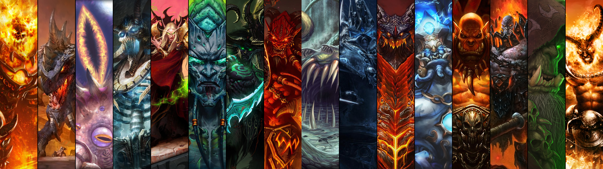

Map Details:
- Clicking on the fire guy on the far left's chest you will be directed to the wowwiki page for Ragnaros. (Poly)
- Clicking any where on the giant eye you will be directed to C'thun's page on wowwiki. (Rect)
- Clicking on the 4th and 5th creature's face will direct you to Kel'thuzad or Kael'thas wowwiki page, respectively. (Circles)
- Clicking anywhere on the 6th pane will take you to the page I created for Illidan Stormrage. (Rect)
- Clicking on the crown in the 9th pane will take you to the wowwiki page for Arthas Menithil. (Circle)
- Clicking anywhere on the 10th pane will take you to the wowwiki page for Deathwing. (Rect)
- Clicking on the faces of the 11th or 12th pane will take you to the adventure guide with the raids these characters were encounted. (Poly)
- Clicking on the center of either the far right two panes will take you to the list of world first kills for the expansion these characters were encountered. (Poly)